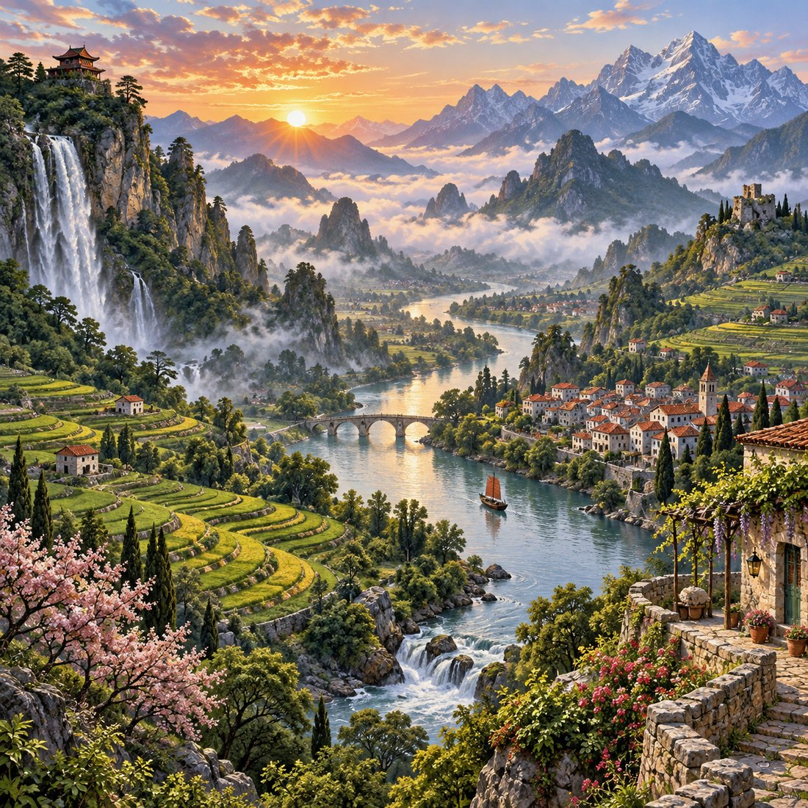

SEVEN WORLDS · 科技與新藝術登場
拾景 · 風景拼圖冒險下一站，
七界冒險！
從山海走向雲端，讓風景點亮你的旅程。
700 關冒險地圖，科技與慕夏藝術新篇章。
已完成 0 / 700 關探索不設限
首次連線會準備遊戲介面；各世界可另存離線圖片。

01 / 700晨霧山谷慢一點，也能走得很遠。
你的下一站001 · 晨霧山谷山海世界 · 晨光啟程
原創風景
700片刻的美好
700片刻的美好
0 / 1,000 旅途經驗再完成 10 關，提升旅人等級
風景收藏0 / 700
已完成路線0 / 35
✦ 一般世界 · 001—100
冒險世界
點亮關卡，跨越世界之門。下一段冒險等你出發。
共 700 關
已完成可遊玩未解鎖
選擇冒險路線山海世界 · 0 / 100
01 / 05已完成 0 / 20 關
晨光啟程
沿著第一道晨光，拼回旅行的起點。
目前旅程第 1 關等你出發
✦ 點選發光的關卡開始拼圖每完成一關，就能前往下一站
DAILY CHECK-IN
今天，也來拾一點美好
每日補給，為旅程存一點星光。
PLAY YOUR WAY
每一次出發，都有新的發現換個心情，換種玩法
SMALL STEPS, BIG JOY
今日的小目標
YOUR POCKET GETAWAY
一段隨時可以出發的旅行
拾景是免費的線上風景拼圖遊戲。從晨霧山谷到永恆花之冠，700 幅原創旅行插畫分成三十五條路線，橫跨山海、幻想、古風、原始、外星、科技與慕夏七個世界。拖曳或點選交換方塊，完成拼圖就能解鎖下一關；也能用每日挑戰與限時衝刺，為日常加一點新鮮感。
怎麼玩？需要下載嗎？
直接在瀏覽器遊玩，點兩塊方塊或拖曳即可交換。可選 4×4、5×5、6×6；鍵盤方向鍵也能交換相鄰方塊。禪意模式不顯示計時。
沒有網路也能玩嗎？
可以。遊戲介面會自動保存；世界圖片會在連線時載入，也能在路線頁保存整個世界的 100 幅圖片供離線遊玩。也可以安裝到手機主畫面。
星砂、道具與進度怎麼保存？
每日簽到、任務與首勝可獲得星砂，再到補給站兌換道具。所有進度保存在目前瀏覽器，不需帳號；清除網站資料會移除進度，不同裝置不會同步。每日以裝置當地日期更新。